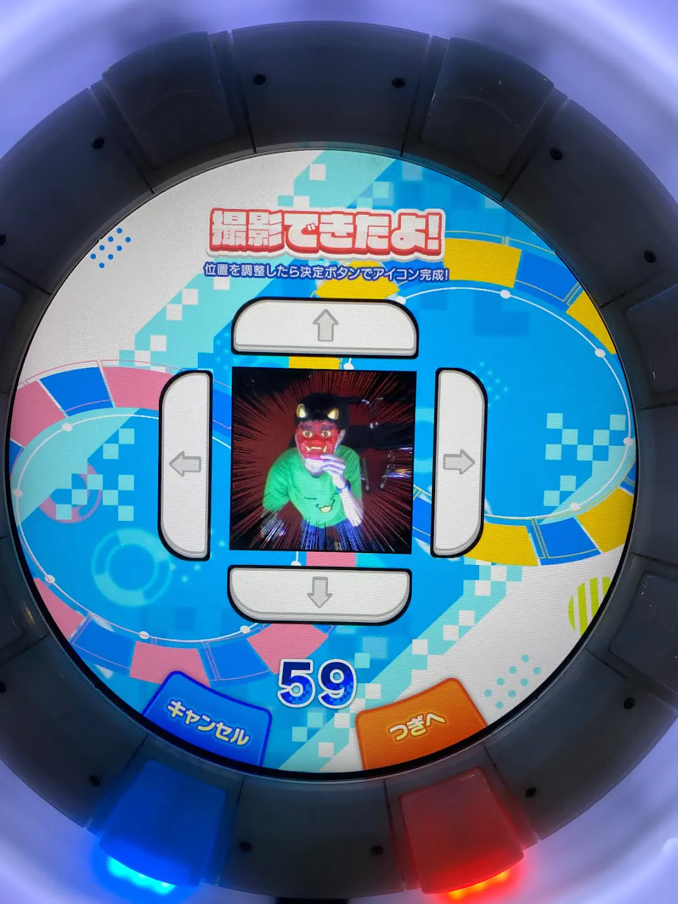
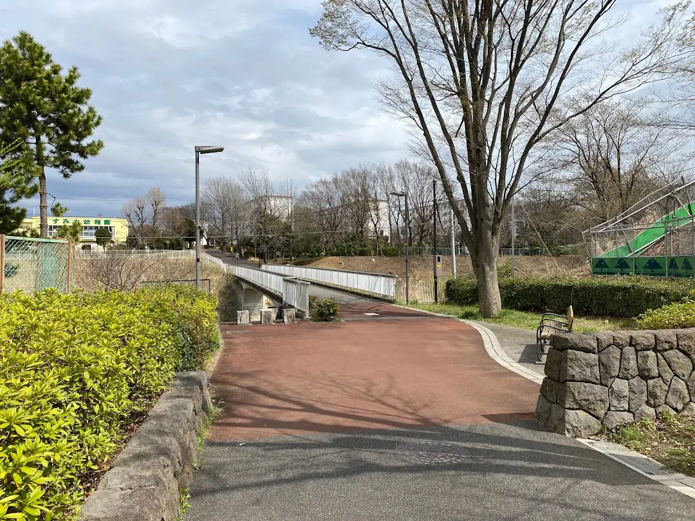
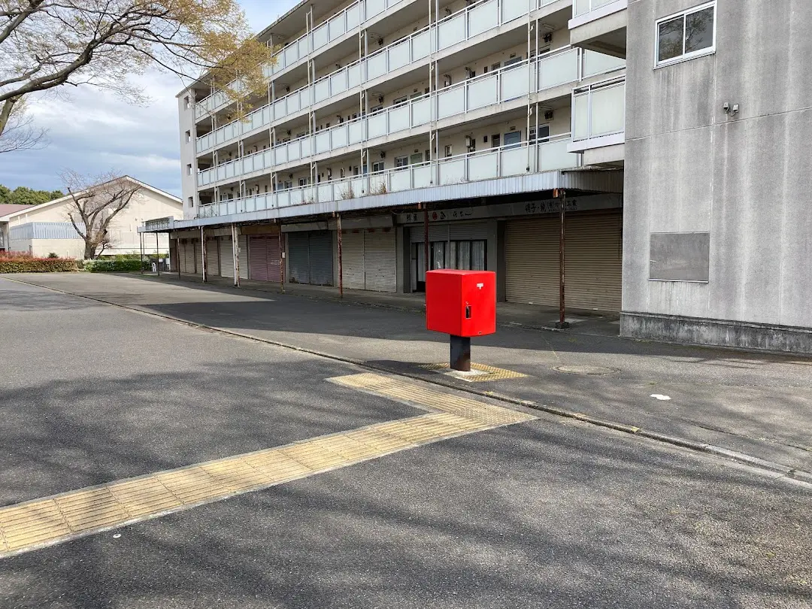
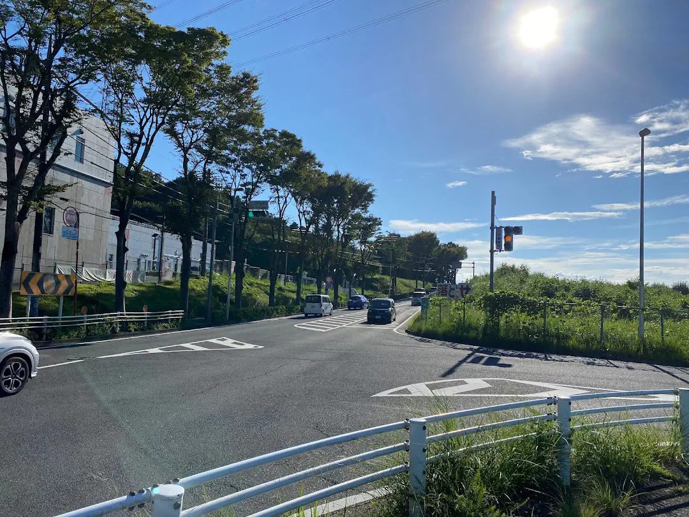
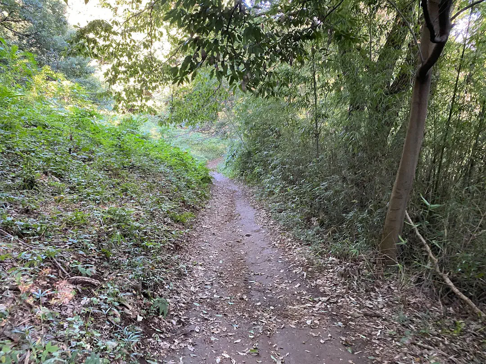
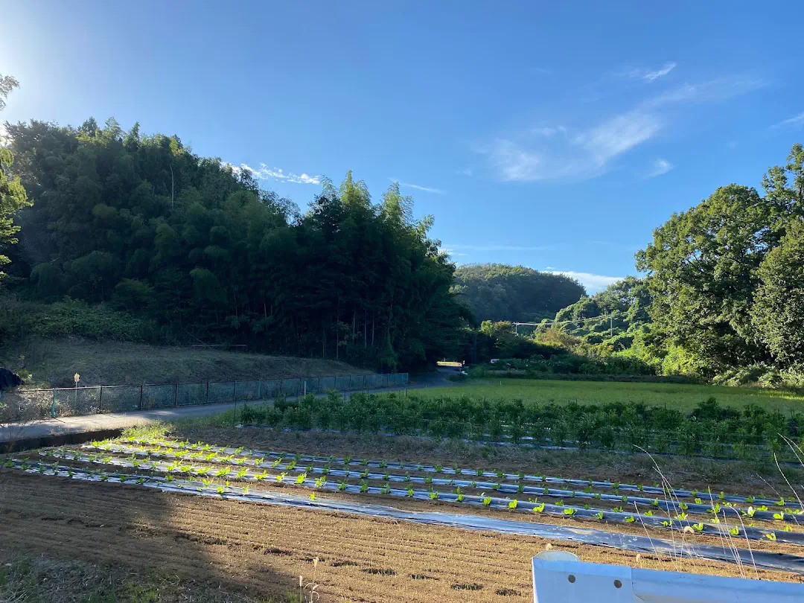
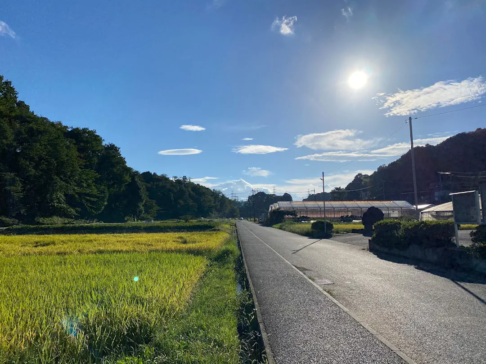
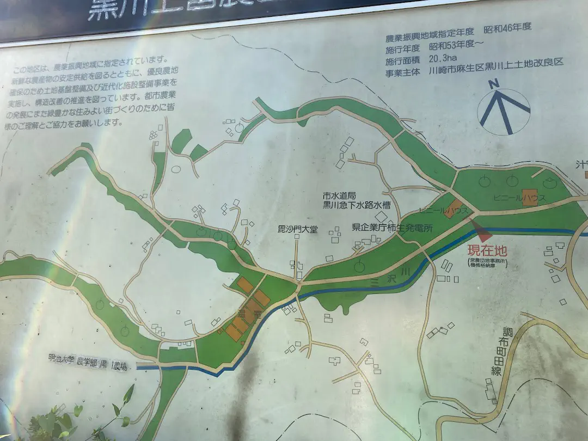
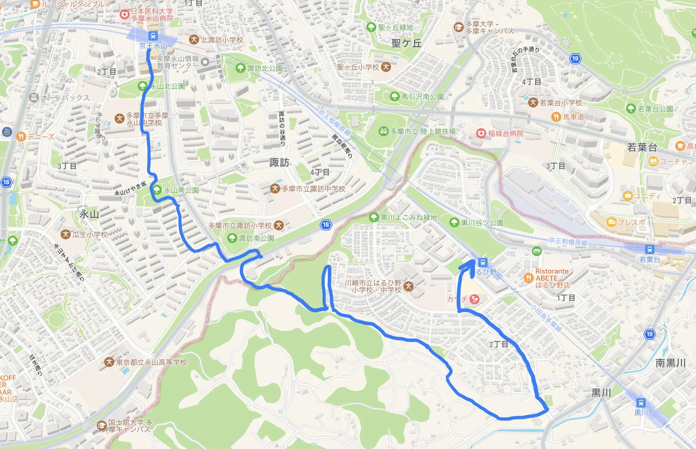
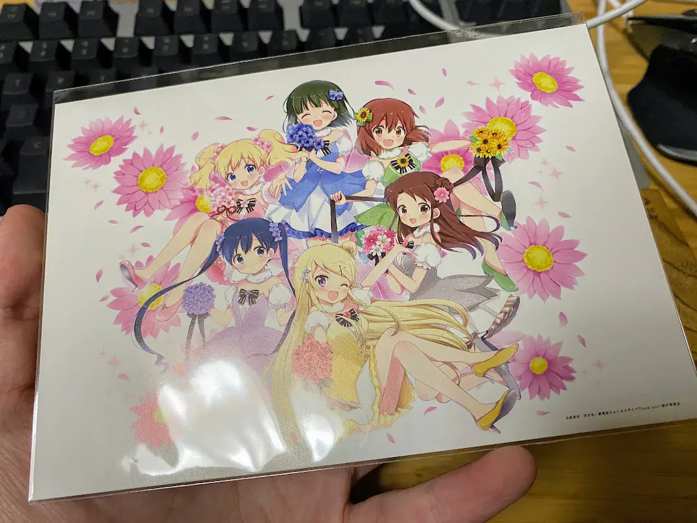

先日マトーサンとちくわぶさんときんモザ映画3回目を観てきました。
- マトーサン
- @mato1370
- 中学吹部が同じだった、オタク
- ちくわぶ
- @chikuwabu_uec
- 大学が同じらしい、オタク
マトーサンは10回目か11回目とか言ってました、強すぎる
せっかくなので永山からしばらく歩いて、途中から電車に乗って新百合ヶ丘の映画館まで向かうことにしましま
永山
マトーサンは多忙で集合時間 (14時) に1時間遅れてきました。絶起！w とか言って遅れてくるバカタレ電通大生とは大違いです。反省してください。
それまでチーム電通大はゲームセンターで遊びました。楽しかったです。

団地を抜けて黒川東営農団地へ向かう
マトーサンがついたのではるひ野へ向かいます。途中 黒川東営農団地 という面白そうな地域があったのでそこを経由して向かいます。それまでは団地の中を進んでいきます。


同じ場所だけど3月の写真です、今日は撮り忘れました(え？)

尾根幹線道路です。オリンピックのロードレースで走ってたかもしれない
ここは T字路(？) なのですが、徒歩なのでこれを無理やり直進します。

さて、山道に入りました。ここも進んでいきます。すると


黒川東営農団地につきました！農業やってる！

地図とか
はるひ野へ向かう
歩いたのが久しぶりすぎてめちゃくちゃ体調崩して(熱中症？)写真撮ってません。んえ〜ゆるしてゆるして
お詫びにちくわぶさんの撮った写真を無断転載します。

こんな感じのルートで歩きました。普通に黒川駅の方が近かったのに道間違えてはるひ野に行っちゃった
そんなこんなで映画をみた

特典をもらいました。わーい
ぴゃーーーってやってるシーンすき
うどん
電車ではなまるうどんに行きました。
わざわざ丸亀まで歩いて行くやつはネアンデルタール人
さようなら